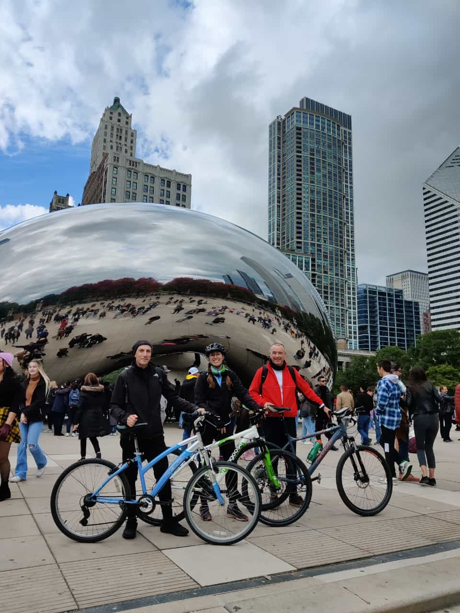

Welcome to Juan First Website
Hello Web Learners Team! I am Juan again. I´m improving my profile attaching a GREAT PHOTO of myself..!
I wish I had so huge quantity of hair in my head!!
Introduction
This is my first web page. For me this is a huge challenge because I have never tried to do something similar(*)
(*)I am tring to do my best!
About my favourite sites
In the first asignment I did a small presentation about myself. Now I´m gonna talk about my favorite websites:
- Netflix
- Youtube
- Spotify
I don´t watch a lot of movies,but some weekends I like to become part of the furniture ...like in the photo!
or as the previous night that I couldn´t stop watching the movie, and next morning I was....!!!
I think It is one of the best in the world. Maybe I could call it like...
In You Tube there are a lot of educational videos and information very interesting for my students.
I love music, and I love to listen in my car or at home.
About my hobbies
I almost forget to talk about my hobbies.
love travelling with my family discovering new cultures and
people.
Besides, I ciclying a lot ( when the weather allow it). One of the places I like is ciclying along
Des Plaines Trail from Libertyville to Chicago (The Cloud Gate ) and I come back with the train.
I love hikking and cicling, but my favorite hobby is traveling, discovering new locations and experiences.
A table with states I visited
As I told you I love traveling. Since 2020 I have been visiting several states . I attach a table with some of the most interesting sites we have visited :
| State | >Miles driving | Year | >Places | >Something to highlight | |
|---|---|---|---|---|---|
| New York | 600 milles (x2) | 2020 | Niagara Falls | Buffalo | The strength of the water impressed me |
| Michigan | 500 miles (x2) | 2021 - 2023 | Grand Marais | UpperPeninsula | Pictured Rocks National Lakeshore is beautiful , and the landscape of Upper Peninsula in Fall is Woowww!!! |
| Washington | (flyght) | 2022 | Seattle | Forks | Mount Rainier and Olimpic National Park are awesome, but it was a disapointment that almost nothing about Twilight (movie) was filmed in Forks |
| Wyoming | 1.500(x2) | 2023 | Jackson Hole | Old Faithful Geiser | Grand Teton & Yellowstone National Park are SUPER AWESOME |
| Total Miles driving | >5.000 miles | ||||